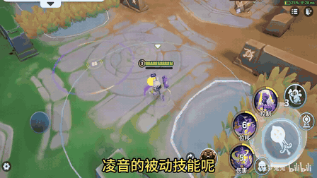
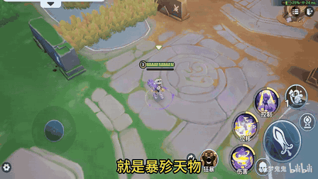
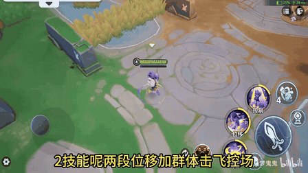
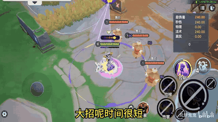

英雄有热度、强度也不低，但专属卡牌内容仍停留在基础版。
- 凌音上线约半年，在自制新英雄中热度表现较好。
- 初始强度一般；1技能治疗在约一个月前加强后，已成为辅助 T0。
- 已有卡牌大多是随英雄上线的基础卡，没有形成清晰 Build。
- 主流玩法集中于用大招进行范围强控，其他技能和被动缺少进一步塑造。
CASE STUDY 01 · 战斗 / 数值策划 · 2026.07
从一项“补齐后续卡牌并完成落地配置”的实习任务出发，在随机选卡与品质卡位约束下，将英雄原本高度集中于大招强控的玩法，重新组织为六条可识别、可独立使用、可组合联动的 Build 方向，并推进至数值预算、技能时间轴配置和本地验证。
7月9日，导师提出“尝试设计凌音后续卡牌，不仅要设计，还要落地配置”。月底前完成方案和本地验证是当时的主要交付预期。
实习约半年，已做过多项平衡性方案；熟悉项目配置流程、UE4技能时间轴和基础数值工作，希望把数值与战斗设计能力整合成可交付成果。
卡牌数量和品质结构明确，但美术、程序与复杂机制成本没有预先给出详细清单，因此方案需要在沟通过程中不断做可行性收敛。
当前阶段主要由本人完成方案、数值与简单配置；复杂效果尚未进入程序对接。阶段性完成标准是本地训练场中触发、筛选和数值表现正确。
这条系统规则直接改变设计方法：单卡必须独立成立，同 Build 卡牌围绕共同战斗目标形成增量联动，而不能互相充当前置条件。
每轮预选3张同品质卡牌进入候选。
系统从预选内容中随机展示2张供玩家选择。
一局最多拿到3张英雄专属卡，不保证形成完整 Build。
完整组合是奖励，不是卡牌正常工作的前提。
公开版以1∶1.5∶2的相对梯度表达。品质不预设“启动—放大—质变”分工，效果是否匹配品质，主要由价值预算、Build完整性与数据表现共同判断。
项目中没有明确要求计算Build成型概率，因此采用经验约束：降低组合内强依赖，保证每张卡可单独工作，并避免同品质或同机制冲突。
卡牌可以略低或略高于品质预算；实际强度还会受历史调整、机制价值和实战环境影响，最终仍需以测试与数据校准。
凌音是辅助／控制英雄。她通过技能命中和“完美时刻”积攒音量，满100进入热舞模式；现有实战价值高度集中在大招控制。

附近友方提升移速和攻速，敌方降低移速和攻速。命中目标与触发完美时刻会收集音量；音量集满后进入热舞模式，提升自身移速与被动效果，期间持续消耗音量。
卡牌机会：音量循环、热舞覆盖、强化普攻与团队增益。
放下音箱，在范围内伤害并减速敌方、提高其承伤；范围内友军每秒回复生命。原技能以静态范围持续生效。
卡牌机会：让音箱追随敌人进行干扰，或吸附队友强化辅助。
向前滑行并留下为队友加速的路径，自身获得可击飞敌人的强化普攻；二段滑行拥有完美时刻判定，成功后提高强普伤害并获取更多音量。
卡牌机会：增加段数与操作频率，或把功能位移改造成进攻手段。
放下音箱并迫使范围内敌人起舞；期间可再次释放最多三道音浪，每段都有完美时刻判定。原本落地移动会取消大招。
卡牌机会：允许受限移动、延长表演窗口，同时保留打断反制。时间顺序：V1三套Build → V2蹦蹦床探索 → V3共同粗拆六路 → V4补全六路 → 当前版数值与效果收敛。
增益流散布在各技能，像一组散卡；大招流只是增加持续时间，表现偏保守；三套方案都过度强调“完美时刻”，熟练玩家收益有限。
滑步流最完整：增加滑行段数，路径留下类似《英雄联盟》派克E的延迟残影，橙卡参考洛大招的穿行控制。导师也认为滑步方向相对成立。
1技能圈持续6秒。获得核心卡后，只要凌音与敌人同时在圈内，使用游戏独有的跳跃键（最多储存4次）便让敌人同步被击飞；完整组合还允许圈外队友接近被影响目标。
导师评价“脑洞很大”，同时指出实现难度较高，但没有否定方向。它证明方案需要更强表现力，也暴露了前期缺少机制可行性评估的问题；后续改用更稳健的六路结构。
在有经验同事指出“被动流过多、技能覆盖不足、三张新卡Build感弱、部分效果难实现”后，共同提出按技能拆不同方向。两条1技能方向由同事提出，其余方向由本人提出。
“大招变移动式范围控制”是好方向，但必须保留克制。由此形成受限移速移动、仍可被打断的巡回舞台，而不是无条件范围硬控。
在六路框架上补齐每张卡的具体机制、品质、循环和卡位关系；避免同品质冲突，保证共享卡“三连拍”可以服务两个2技能方向。
导师与同事认为整体方向可行，方案从讨论阶段进入数值计算和本地制作。最能代表个人独立设计的是三连拍、完美律动、巡回舞台。
把百分比生命伤害改为法强成长伤害，降低打坦风险；调整完美律动收益；聚光灯改为拖拽吸附并强化保护；终曲乐章确定减速上限与低生命斩杀阈值。
大部分效果和数值已确定，开始配置。追拍因吸引力不足、高频音障因保护射手与近战进攻诉求冲突，仍需重新设计。
贡献口径：导师负责目标与关键反馈；有经验同事参与六路框架讨论并提出两条1技能方向；数值同事参与当前版效果和数值收敛；本人负责资料研究、核心机制补全、整体方案、数值预算、简单配置与本地验证。
Build用于组织设计和传达玩法，不承诺一局必然凑齐。单卡可用、组合有循环，是贯穿六路方案的统一原则。
更快积攒音量，放大热舞状态下的个人进攻和团队辅助收益。
让静态音箱具备追踪与施压能力，同时强化凌音的伤害方向。
把音箱圈吸附到队友身上，支持多目标布置、增幅和保护。
奖励连续滑步与成功判定，围绕操作频率和热舞状态形成正循环。
把原本偏功能性的位移路径转化为可控方向的主动输出手段。
将定点强控改造成可以追随战场的表演，同时通过低移速和可打断保留反制。
2技能原本仅有两段滑行和一次完美时刻。三连拍增加第三段滑行与判定，成功后自动在地面释放强化普攻；滑行方向仍由玩家控制，不额外增加方向选择或时间窗口。
把熟练操作的收益从单纯“判定成功”扩展为音量、免伤与2技能冷却收益。目标是让一套成功技能判定配合技能本身的音量获取，能够进入热舞模式。
大招期间允许凌音以受限移速一边蹦跳一边移动，成功触发完美时刻可缩短剩余冷却。大招仍可被打断，保留对手控制与站位反制。
下表是当前方案快照。三连拍同时服务两条Build，但在24张卡池中只占一个卡位。状态“待配置”不等于未完成设计。
攻击+22，移动速度+6%
攻击+30，冷却缩减+10%
攻击+40，技能伤害减免+15%
原方案为累计多次完美时刻后强化普攻追击；当前吸引力不足。
低血量获得短时减伤，并震晕周围目标。
热舞模式结束后返还20点音量并回复20%最大生命。
提高音量获取速度；进入热舞时获得短时护盾，并在热舞期间提升攻速。
法强随音量增长；热舞期间周期性缩短最近队友的剩余技能冷却。
热舞持续发出伤害音波；同一目标累计命中3次后被迫起舞。
1技能为其他队友提供按最大生命值计算的护盾，并提高治疗效果，覆盖技能持续期。
扩大1技能范围，保留伤害命中敌方时的冷却收益。
音箱自动搜寻敌方，销毁时按目标生命造成伤害并附带短暂击飞。
强化1技能伤害；范围内逐步叠加减速，并对极低生命目标提供斩杀。
增加1技能的存储次数。
拖拽吸附队友；期间强化治疗、提供减伤与技能防护。
原保护射手方案与近战队友进攻诉求冲突，需要重新设计。
每次2技能位移获得护盾，完美时刻额外获得护盾。
追加一段滑步与完美判定；成功后自动在地面释放强化普攻。
成功完美时刻提供音量、叠层免伤和2技能冷却收益。
扩大2技能路径宽度与长度，碰撞目标时追加法强成长伤害。
召唤幻象延迟复制2技能；伤害生效，完美结果跟随本体。
延长大招持续时间，并增加一次完美时刻机会。
大招期间可受限移动、仍可被打断；成功完美判定可缩短剩余冷却。
大招范围增加5米，伤害提高25%。
旧卡处理说明：将原有“变奏”与“热舞余韵”的可用价值进行合并整理为“协奏混响”，并释放原“热舞余韵”卡位，由新的2技能幻象机制“回响共振”替换。
计算沿用项目既有价值口径；本人负责将卡牌拆解、选择计算路径、补入业务假设，并按Build汇总检查。公开版仅展示相对预算和公式结构。
复合属性卡 = 属性A × 对应单价 + 属性B × 对应单价直给属性直接按单价换算；伤害、治疗、护盾等按命中、目标、覆盖和有效率折算；减冷却先转化为频率收益；控制、位移、吸附和移动施法等难量化效果保留“特效预算”，再用同类卡牌、经验和实测判断。
数值价值 = Σ（子效果满额收益 × 命中／覆盖／次数／有效率修正）
最终判断 = 数值预算 + 难量化机制价值 + 实测反馈技能占比法和生命周期次数法是两条整局收益估算路径。根据效果形态选假设更少、解释更直接的一条，另一条可用于交叉校验；同一项收益不机械重复叠乘。
护盾与治疗分别估算，再统一折入平均目标数、战斗内触发次数与有效率，避免把理论满额收益直接当作实战价值。
护盾价值 = 单次护盾 × 平均目标数 × 触发次数 × 有效率
治疗价值 = 单跳治疗 × 跳数 × 触发次数 × 增幅比例数值收益控制在对应品质区间，目标筛选与持续范围另行测试。先根据完美时刻的预期触发次数估算总剩余冷却缩减，再把它转换成技能释放频率增量，并乘以大招在整局技能价值中的占比。
频率增加 = 总剩余冷却缩减 ÷（1 − 总剩余冷却缩减）
价值 = 频率增加 × 技能占比 × 频率单价移动施法归入机制预算，并通过受限移速与可打断控制风险。百分比生命伤害不能按真实伤害直接估值，需要先经过目标防御折算，再乘平均命中目标数和生命周期次数。
伤害价值 = 标称生命伤害 ÷ 防御折算
× 平均目标数 × 生命周期次数 × 伤害单价剩余预算由自动追踪、短暂击飞等难量化机制承担。严格模型需要计算常态与热舞状态差值、音量节奏和覆盖率增量，参数链过长。初值先用固定的被动权重概括音量加速收益。
音量加速价值 ≈ 音量获取增幅 × 被动权重 × 频率单价护盾与攻速继续独立计算；后续由实测校正整个卡牌与Build。表现分档由选取率与选卡胜率综合得到，只用于凌音卡牌内部比较，不是跨英雄绝对评分。理论计算用于控制初始预算，并不代表完整Build已经通过实战强度验证；理论与实战偏移需要后续平衡调整。
项目使用基于UE4的可配置技能时间轴。当前优先制作属性、状态与目标筛选类效果，复杂机制需在可行性确认后推进。
卡牌名称、品质、标签、效果与Build
效果说明、技能标签与资源引用关系
持续、层数、数值、结算与目标逻辑
挂载效果、筛选目标并设置触发条件
验证触发、目标、重复命中与最终数值
效果由护盾与治疗增幅两部分组成，持续时间与1技能作用窗口一致。在效果配置层分别建立属性修改和治疗修正，再于技能时间轴挂载状态效果，验证持续时间、目标筛选和实际数值。
1技能触发条件与其他队友目标
护盾／治疗增幅，覆盖技能窗口
状态效果挂载并完成验证
效果配置中存在残留的无效记录，与新资源发生标识冲突。问题提示配置前必须检查完整占用关系，而不能只看当前显示内容。
效果所属的关联组未正确填写，导致同组其他效果没有生效。定位时沿“卡牌入口 → 效果组 → 具体效果 → 时间轴挂载”逐层排查。
要把卡牌方案真正做进游戏，必须理解技能在引擎中的组织方式。以下是从技能配置核对中提炼的通用结构，也是判断“某个效果能不能做、需要改哪一层”的依据。
不同技能、状态、投射物和结算资源拥有各自的标识规则，但不能只靠位数或外观猜测类型。实际工作中需要同时核对资源说明、上下游引用与运行行为，避免复制旧配置时带入错误关联。
生成投射物的时间轴节点只负责发射行为，最终伤害在命中结算层完成。据此可精准定位调整层级：数值问题检查结算配置，弹道手感检查投射行为，前摇与冷却检查技能时间轴。
范围或投射物判定负责确认命中，再向目标施加对应控制状态。效果是持续触发还是一次生效，由受击间隔、最大命中次数与时间轴窗口共同决定。
“完美时刻”由窗口判定模块和输入触发模块协同：前者定义节奏点、判定窗口与结果分级，后者在玩家再次点击时发送输入信号。两者解耦，方便复用于不同技能段。
同一时间轴可以放置多组相似节点，并依据角色是否持有某个状态决定当前生效项。这是实现强化态、完美增伤和卡牌分支的统一思路，也让新增卡牌尽量复用已有逻辑。
形态切换可通过重定向默认技能槽实现：进入热舞时将普攻切换为增强版本，退出时还原。对于卡牌带来的技能替换，还需要额外检查状态退出、死亡和重置等边界。
“延时演出”需要在原多段大招后追加一段音浪与完美判定。实现中出现“新增段无法正常触发”，排查后确认并非单一故障，而是三类关联问题依次叠加。问题均已修复，该卡完成本地验证；以下保留排障方法，项目专用字段与标识已抽象化。
新增段由复制上一段而来，但其关联资源仍指向旧段。修正新段与对应本体的引用关系后，技能槽才恢复可点击判定。
原本的冷却触发节点在旧末段结束时执行，导致新增段尚未点击便进入冷却。将技能结束与冷却时机移动到新的末段后，主流程恢复。
旧末段原本是链条终点，因此没有配置“仍在连续判定中”的检查。新增段后它变成中间段，必须补齐连续状态的传递条件。
通过行为对照和相似技能配置交叉验证，确认多段技能依赖连续状态区分“仍在演奏”与“技能已经结束”。原末段作为终点时无需继续传递；追加新段后，它的角色变为中间段，若仍沿用旧配置，后续流程就会被误判为已经结束并提前进入冷却。
作品价值来自完整工作链，而不是把所有想法都归为个人独立完成。以下口径适合面试中如实说明。
研究凌音基础技能、已有卡牌与热力数据；分析为什么基础卡无法形成Build，梳理24张卡池、品质和随机选卡约束。
完成V1、V2探索；在六路框架上补齐具体效果、品质与循环。独立代表设计：三连拍、完美律动、巡回舞台。
使用项目既有价值口径建立卡牌预算，按Build合并检查；完成简单卡牌的入口配置、状态效果、时间轴挂载与本地验证。
处理资源标识冲突与关联组配置错误，记录测试边界；识别两张待改卡和复杂机制实现风险，提出后续改进路径。
给出任务目标与阶段反馈；指出化学反应不足、完美时刻放大不合适、移动大招需要可打断等关键问题。
指出V1结构问题；共同提出按技能拆六路的方向，其中两条1技能方向由同事提出，其余方向由本人提出。
参与当前版卡牌效果与数值收敛，对攻击距离、保护与进攻冲突、伤害形式等提出修改意见。
属性价值口径、基础技能、既有筛选逻辑和UE4技能配置工具来自项目；本人负责正确调用、组合和验证。
从“玩法问题是什么”出发，经历机制探索、同事反馈、Build结构收敛、卡位整理、数值预算、配置挂载和本地测试。这条链同时展示战斗策划的玩法判断、数值策划的预算意识和内容落地能力。
当前项目仍在制作中。复盘既包括已经形成的方法，也包括尚未完成的验证和应该提前做的工作。